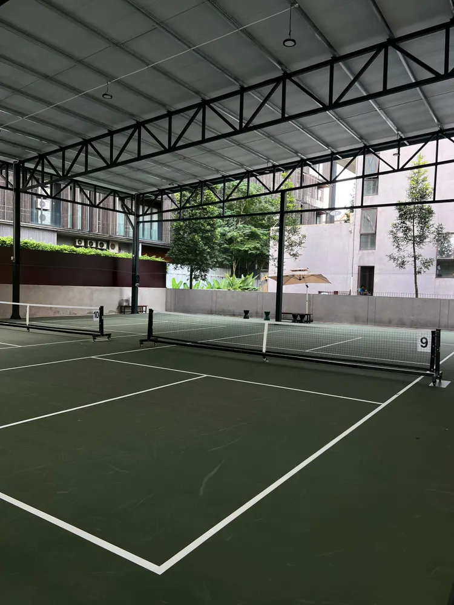

Kuala Lumpur · Jalan Tun Razak
Urban Pickle
Covered and open pickleball courts in the city.
Urban courts, club calm
Steel-framed covered courts, open-air play, and a quiet clubhouse feel right off Jalan Tun Razak in Taman U Thant.
Open 7:00 AM – 12:00 AM daily.

Amenities
- AED
- Ball machine
- Parking
- Changing room
- Free parking
- Shower
- Food
- Drinks
- Street parking
- Pet-friendly
- Toiletries
- Toilets
- Paid parking
Visit
Getting here
Urban Pickle, Jalan Tun Razak, Taman U Thant, Kuala Lumpur, Federal Territory of Kuala Lumpur
Official parking partner: Ottomu Parking (facing the main road). Limited free parking at the entrance. RM4 flat rate at Ottomu (weekday after 5 PM; weekend all day) — validate at the counter.